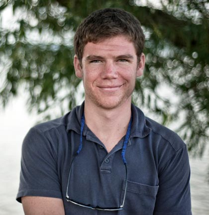

Empowering the Q’eros nation
“Life is hard
up here in the clouds.”
Juliana, a Q’eros grandmother
Considered Peru’s last Incan community,
the Q’eros Nation is a cultural treasure,
yet its communities lack basics such as electricity, clean water, health care, and food security.
Willka Yachay’s goal is to empower the next generation of the indigenous Q’eros nation of Peru to become leaders who elevate their standard of living, guide their community toward sustainable modernity, and revitalize their cultural identity.
Willka Yachay
(SACRED KNOWLEDGE)
Willka Yachay builds schools high in the Andes.
Mothers, fathers, and elders play an integral role in designing and teaching innovative programming. Hands on student projects serve as community development initiatives.
The Q’eros people possess unique knowledge, from spiritual practices to farming to weaving. Yet their way of life is threatened. Many are migrating to urban areas for the sole purpose of educating their children. Families rarely return to the community after leaving. They have no health care, clean water or electricity. Food security is low. Child mortality is high. Q’eros is a microcosm of the plight of native people worldwide as reported in the UN’s State of the World’s Indigenous Peoples.
The Q’eros are striving to sustain their indigenous Andean identity in the face of outward migration, large-scale mining, globalization and the arrival of a road. Willka Yachay and community members identified culturally relevant primary and secondary education in Q’eros as the first step toward a sustainable future for their children and society.
Our Projects
Our Projects
About Us
Our Team
-

Benito Machacca Apaza
-

Cesar Cruz Zamata
-

Hilario Machacca
-

Lorenzo Flores Machacca
-

Hannah Rae Porst
-

Heidi Helena Emidy
-

Jesús Rios Mencia
-

Fredy Machacca Flores
-

Dr. Holly Wissler
-

Robert Friedman
Our Story
Hannah Rae Porst’s work in Q’eros began in 2010 when she lived among its people while researching the intersection of culture and development. During a community dinner on the eve of her departure she asked the village parents how she could thank them for their hospitality. There was some initial talk about soccer shoes, but what they really needed, they told her, was a school. While a senior in college, she raised funds for, founded, and helped build the first primary school in the Q’eros village of Ch’allma Chimpana. Hannah moved to Cusco in 2011 to continue work with the Q’eros. She and a colleague, Heidi Helena, established Willka Yachay, a Peruvian non-profit organization. Willka Yachay is Quechua for sacred knowledge. Hannah loves the Q’eros people and continues to learn much from them.
Our Advisory Board
Jane Galer, Louisa Callery, Robert Friedman, Nancy and Richard Porst, Nicolo Davide Balzani
Our Allies


Q’eros
(KEH-ros)
The Q’eros Nation has been designated by Peru’s Ministry of Culture a “national living cultural patrimony” for the continuity of its ancient Andean traditions.
Considered to be the “último ayllu inka,” or the last Incan community of Peru, the Q’eros strive to preserve and promote their indigenous ethnic and cultural identity.
Q’eros live a hardworking life immersed in nature: they perform offerings to Pacha Mama, Mother Earth, and to the Apus, mountain spirits, in exchange for the well being of their animals, crops and themselves.
Worldview concepts of ayni, the importance of reciprocal sharing, and animu, awareness of an animated essence in all things, shape their interactions with each other and their environment. Love, joy, perseverance, intrinsic integrity, and the ability to “simply just be” suffuse their daily lives.
Despite the harsh conditions to which they are exposed and a history as targets of discrimination & marginalization, the Q’eros people endure.
Where
in the world
The remote villages of Q’eros are located at 14,500 feet above sea level in the snow-capped Cordillera Vilcanota range, the highest mountain chain in southeastern Peru. There are over 2,000 people who live in the nation’s fourteen villages spread across many river valleys.
Q’eros travel between and utilize three different ecosystems that span from 15,500 feet down to 6,000 feet above sea level: from snowy peaks to ceja de selva, “the eyebrow of the jungle.”
They raise llamas and alpacas at the highest altitudes, descend to grow potatoes and raise sheep, and descend further to grow corn, squash and other vegetables and to harvest bamboo and wood for buildings, looms and flutes.